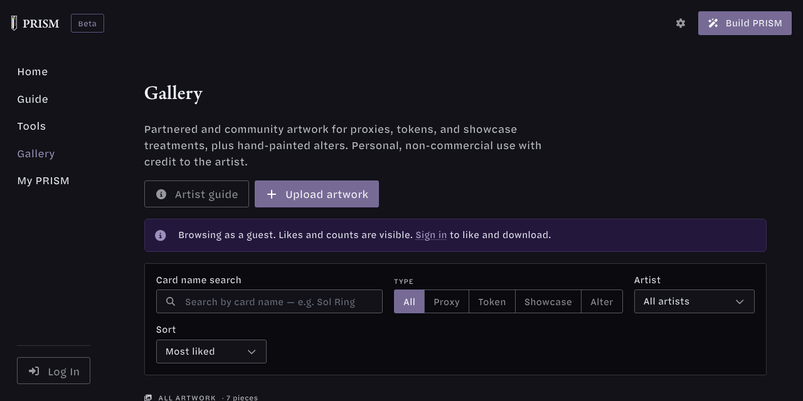

Artist Guide
The PRISM gallery shows your art to PRISM users, credited to you, with a link back to your site and an optional commission form. This guide covers getting set up, uploading, and taking commissions.What to send us
Send us these and we set up your artist page. You can edit everything except your name yourself later.
| Item | Notes |
|---|---|
| Display name | Exactly as you want to be credited. Shown publicly, so a handle or studio name is fine. |
| Email for your PRISM account | Sign up with this email so your page links to you. Never shown on the site. |
| Short bio | One or two sentences. |
| Links | Website, socials, shop. Each must be an https:// address. |
| Avatar (optional) | A link to a square image hosted somewhere public, starting with https://. |
| Store link (optional) | If you sell prints or files of a piece, tell us which piece and the link. |
Send them in the PRISM Discord or reply to the message that brought you here.
Your account
You make your own account. Sign up with the email you sent us and your artist page becomes yours automatically, with nothing to claim. It works whether you sign up before or after we set the page up.
- Go to prismmtg.com, click Log In, then Don't have an account? Sign up.
- Enter the email you sent us and choose a password.
- Confirm your email from the message we send you.
- Open your artist page and click Edit artist page to add your bio, links and commission settings.
Already have a PRISM account with that email? Nothing to do: the page is linked to it as soon as we set it up.
Prefer not to sign up yourself? Ask and we email you an invite instead. Click Accept invite, choose a password, and the page is yours.
One account owns one artist page. If you work under two names, tell us.
Uploading your work
Signed in, go to the gallery and choose Upload artwork. Files must be PNG, JPG or WebP, 10 MB or less. Every upload is reviewed before it goes public.

Pick the type that fits the piece:
| Type | Use it for | Players can download it |
|---|---|---|
| Proxy | Full card art for printing a playtest or proxy card | Yes, when signed in |
| Token | Token art | Yes, when signed in |
| Showcase | Alternate treatments, card backs, frames | Yes, when signed in |
| Alter | A photo of a real card you painted by hand | Only if you turn on Allow downloads |
The form asks for:
- Title, e.g. “Sol Ring — Ornate”.
- Original card (optional): the Magic card the art is for. Start typing and pick it from the list. For an alter, this is the card you painted.
- Description (optional): a few words for players.
- AI-assisted: tick it if AI was used anywhere in the piece.
- Display name: your credit. It starts as your artist page name; keep it, and approved pieces link to your page automatically.
- Allow downloads (Alters only): off by default. Turn it on to let signed-in players download the photo for personal use.
After approval you can still edit the details. To replace the image itself, withdraw the piece and upload it again.
A piece missing from your page, such as one credited under another name? Open My uploads in the gallery and click Add to my page.
Your artist page and commissions
Open your artist page and click Edit artist page, or use the Artist page section on your Profile. Changes go live straight away, with no review.
- Bio, links, avatar. Links and the avatar must be https:// addresses. The avatar is a link to an image, not an upload.
- Commissions open / closed. Turn it on only while you are taking work.
- Commissions note. One or two lines shown above the form, e.g. “Sleeve art, ~2 weeks, DM for rates”.
- Commission email. Where requests are sent. It starts as your account email and you can change it. It is never shown on the site.
When commissions are open, signed-in players see a request form on your page. Alters also get a Commission this artist button on the piece itself.
How a request reaches you:
- The player writes their request and can pick one of your pieces as a reference.
- You get an email from commissions@relay.prismmtg.com. It has their message, plus the piece’s title, thumbnail and link if they picked one.
- Hit Reply. It goes straight to the player. From there the conversation is between the two of you; PRISM is out of the loop.
Your address stays private until you reply. Each player can send you at most one request a day, and three a day across all artists.
What PRISM does and doesn't do
- PRISM relays one message per request and keeps no copy of it. We never see your replies or anything after them.
- Pricing, payment, delivery and terms are between you and the player. PRISM takes no cut and no fee, and handles no money for commissions.
- Store links point to your own shop. The sale happens there, not through us.
How your work is shown
- Credit. Every piece shows your display name and links to your artist page, which links to your site and socials.
- License. Proxies, tokens and showcase pieces carry one site-wide line: personal, non-commercial use only — credit the artist. Signed-in players can download these, so only upload files you are happy to share on those terms.
- Alters. By default shown as a photo only, with no download button, and the line display only — not for reproduction. Commission the artist for your own. If you allow downloads, they work like other pieces. They also appear in Alter Alley.
- AI disclosure. Pieces marked AI-assisted show an AI tag.
- Store links. Any piece can carry an Order custom sleeves button that links to where you sell it; send us the piece and the link. We also feature standout pieces at the top of the gallery.
Questions
Ask in the PRISM Discord or reply to the message this guide came with.